| 日付 | 2009年8月15日（土） - 2009年8月22日（土） | ||||||||||||||
|---|---|---|---|---|---|---|---|---|---|---|---|---|---|---|---|
| 山域 | 北海道の山 | ||||||||||||||
| メンバー | 単独 | ||||||||||||||
| 山行形態 | 7泊8日テント泊 | ||||||||||||||
| アクセス | 電車、飛行機、バス | ||||||||||||||
| ルート (Map) |
|
4日目
5:48 南沼キャンプ場出発。
今朝も雨が降っているのでカッパを着ての出発だ。
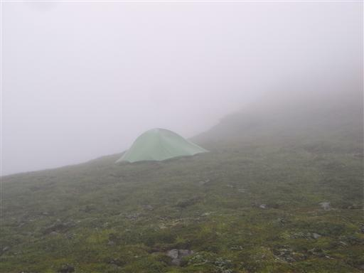
昨日に引き続き、大平原の中を歩いていく。
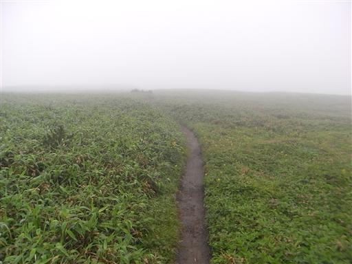
通行止の標識はなんと「昭和56年7月」と書かれている。
地図には赤線が引かれているので、道は通じているのだろう。
紛らわしい標識だ。
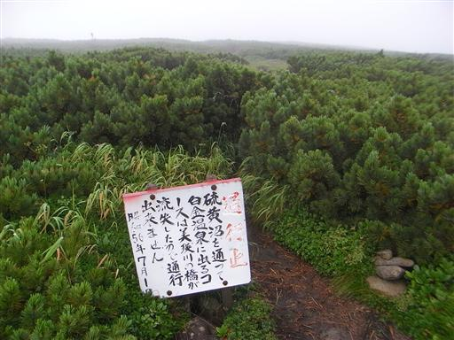
雨が止んで少し視界が広がってくる。
この辺りはカール地形が広がっている。
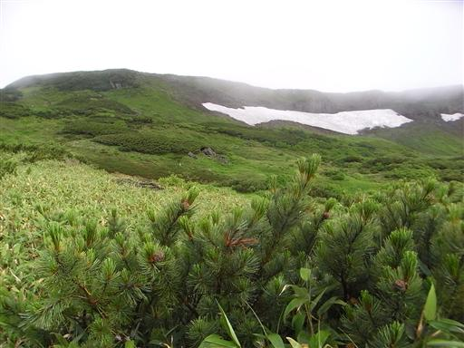
鮮やかな色のキノコ。
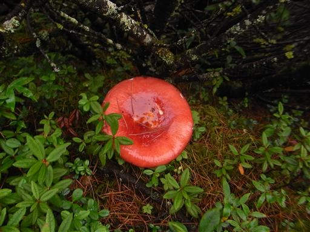
2人組の欧米人と抜きつ抜かれつしながら歩いていく。
彼らは今日、美瑛小屋まで行くそうだ。

急斜面になっているところに鎖がある。
鎖に頼るほどの場所ではないが、今まで歩いてきた平坦な場所から
少しずつ山岳地形になってくる。
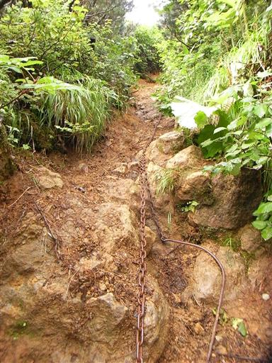
登山道の右側は切れ落ちて崖になっている。
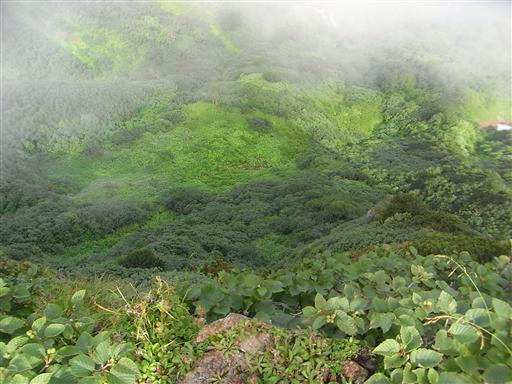
コバノイチヤクソウ。ほのかに赤みを帯びている。
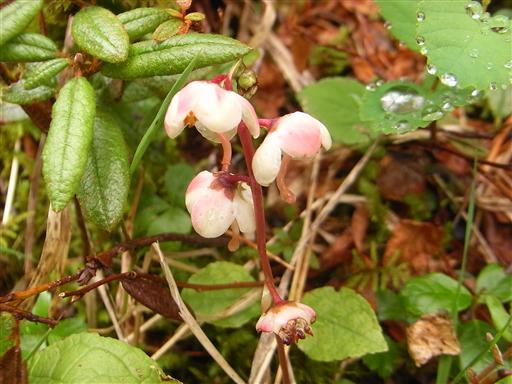
トムラウシからオプタテシケ山に続く稜線。
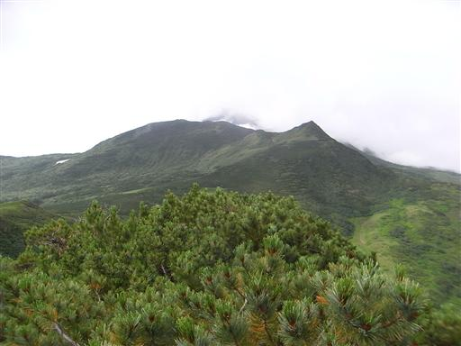
登山道の刈払いはきれいに行われている。
今年発売の地図には藪があると書かれているが、ほとんど藪なしで歩きやすい。
白雲岳からトムラウシの道のほうがよっぽど歩きにくかった。
刈払いは最近行われたものではなさそうなので、
今年の地図といえど、情報は昔のままで全く更新されていないようだ。
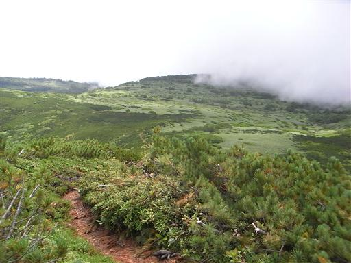
聳え立つ岩峰。登山道は左側を巻いている。
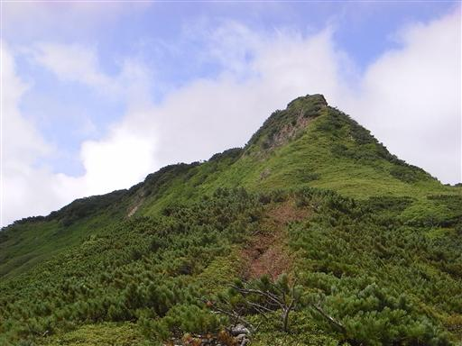
ハイオトギリ。
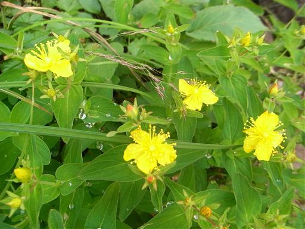
眼下には池塘と森が広がっている。
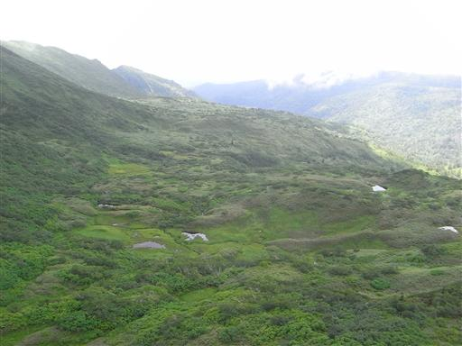
歩いてきた稜線を振り返る。久々に見る雄大な景色だ。
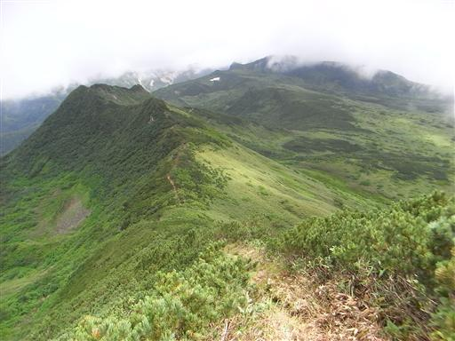
赤い実がなっている。まだ青い部分があるが、
一つつまんで食べてみると少々酸っぱい。
よくよく考えてみると、北海道では生水だけでなく、生の実も危険だった…

ミヤマホツツジ。
雌しべが途中でくるっと90度曲がって上を向いている。
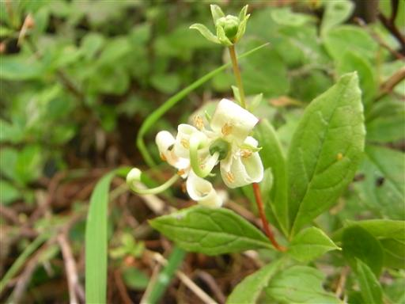
登山道の真正面にオプタテシケ山が姿を現す。
富士型のとにかく大きな山だ。
縦走路上でここまで存在感のある山は珍しい。
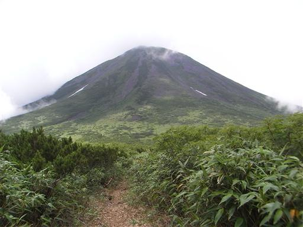
12:14 双子池キャンプ場到着。標高1440m。
まだ時間は早いが雲も出てきたし、オプタテシケは天気がいい時に登りたいので明日とする。
美瑛小屋に向かうと言っていた外国人2人組は、まだここでのんびりと休憩していた。
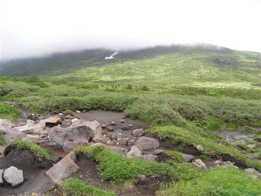
イワイチョウの花が咲いている。
他にもエゾウサギギクやヨツバシオガマが咲き、
水場もあるなかなか良いテント場だ。
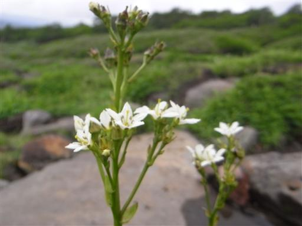